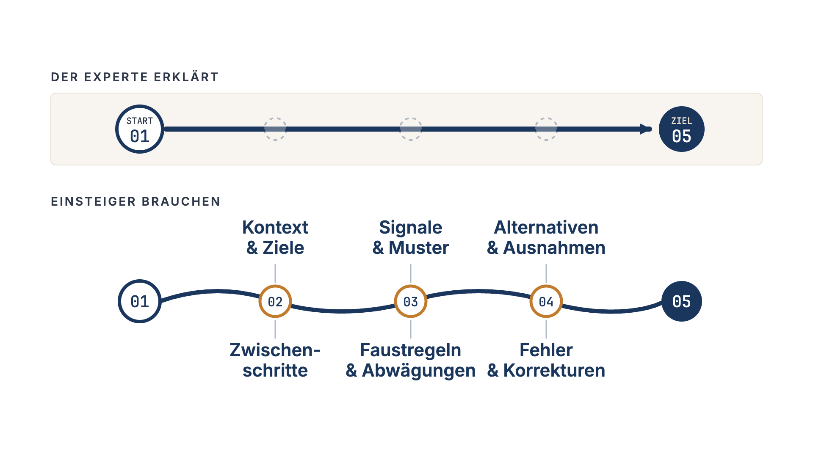
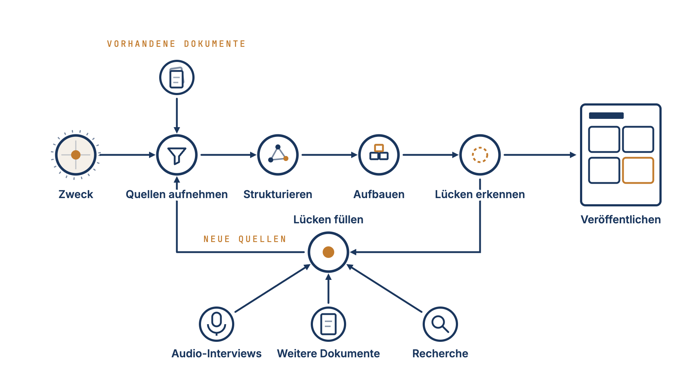

Zweckgerichtete Wissensbasen mit Experteninterviews
Dokumente zu ordnen reicht nicht, wenn das nötige Wissen nie aufgeschrieben wurde. Warum jede Wissensbasis mit einem Zweck beginnt und Interviews die Lücken schließen.

Zuerst erschienen auf LinkedIn (Englisch). Für die Website übersetzt.

Ein klassisches Angebot im Wissensmanagement ist eine Plattform, die Unternehmen hilft, ihre Dokumente zu ordnen und leichter zugänglich zu machen. Das ist wichtig, denn es ist schade, wenn sich jemand die Mühe gemacht hat, wichtiges Wissen aufzuschreiben, und andere es nicht nutzen können, weil sie es nicht finden.
Bei Knowledge Retention Solutions haben wir jedoch gemerkt, dass Struktur und Zugänglichkeit für viele Unternehmen nicht ausreichen. Forschungsergebnisse deuten darauf hin, dass rund 60 % des Wissens, das Menschen für ihre Arbeit brauchen, auf Erfahrung beruhen, und vieles davon ist nicht dokumentiert. Wenn das auch für Sie gilt, löst eine bessere Suche das Problem nicht.
Warum Aufschreiben selten funktioniert
Als uns klar wurde, dass die benötigten Informationen in den Köpfen der Menschen steckten und noch nicht dokumentiert waren, brauchten wir einen Weg, sie aufzuschreiben. Die naheliegende Lösung ist, die Menschen zu bitten, es selbst zu tun. Aus zwei Gründen führt das oft zu enttäuschenden Ergebnissen.
Der erste ist der sogenannte Fluch des Wissens mit den blinden Flecken, die Expertise mit sich bringt. Experten fällt es oft schwer, sich in einen Anfänger hineinzuversetzen. Sie halten Dinge für selbstverständlich, die für Außenstehende alles andere als selbstverständlich sind.
Der zweite: Nicht jeder schreibt gern, und nicht jeder hat Zeit zum Schreiben. Schreiben ist eine Fähigkeit, die Übung braucht. Ohne diese Übung geht es quälend langsam, und das macht es noch schwerer, das Schreiben in einen vollen Terminkalender einzubauen.
Das Ergebnis dieser beiden Grenzen ist eine Dokumentation, der es an Breite und an Tiefe fehlt.
Interviews als gleichwertige Quelle
Unsere Lösung ist, Audio-Interviews zu einer gleichwertigen Quelle der Wissensbasis zu machen. Wir nutzen Interviewmethoden, die auf der Kognitionspsychologie beruhen und eigens dafür entwickelt wurden, Expertenwissen zu erheben. Durch die Audioaufnahme muss der Experte nicht alles selbst aufschreiben.

Bei der Gestaltung des Interviewprozesses merkten wir allerdings, dass wir Dokumente und Transkripte nicht einfach so lassen konnten, wie sie waren. Um wirklich gute Interviewfragen vorzubereiten, mussten wir die vorhandenen Dokumente zuerst rund um den Zweck der Wissensbasis neu ordnen.
Das ist heute der Ausgangspunkt unserer Projekte zur Wissenssicherung: Wer soll die Wissensbasis wofür nutzen? Was ist ihr Zweck?
Ist der Zweck festgelegt, kann man die Dokumente auswählen, die dafür relevant sind, und die Lücken erkennen, die man schließen muss, um ihn zu erfüllen.
Damit stand unser Kernprozess.
Der Kernprozess
Man beginnt mit einem Zweck. Man strukturiert das Wissensgebiet auf Grundlage der Dokumente und der Gespräche zum Umfang. Diese Struktur zeigt die Lücken der Wissensbasis, die man dann systematisch durch Interviews, weitere Dokumente und Recherche füllt. Diesen Kreislauf durchläuft man so lange, bis das Ergebnis passt.

Wie die Wissensbasis aussieht
Eine Folge dieses Ansatzes ist, dass die Wissensbasis ähnlich wie ein Wiki aufgebaut ist. Aussagen aus den Quelldokumenten werden zerlegt und zu in sich geschlossenen Artikeln geordnet, die in zusammenhängenden Themengebieten liegen.
Eine Wissensbasis für die Vertriebsunterstützung könnte im Themengebiet Vertrieb Artikel zur Einwandbehandlung und zu Pitches für verschiedene Entscheider enthalten. Eine Wissensbasis zur Sicherung von Ingenieurwissen könnte im Themengebiet Konstruktionslehre Artikel zu Auslegungsgrenzen und typischen Fallstricken oder zu Temperatureinflüssen enthalten.
Man kann die Wissensbasis so nutzen wie Wikipedia, um sich in bestimmte Themen einzulesen. Man kann Teile davon auch in maßgeschneiderte Unterlagen umwandeln, etwa in Vertriebs-Playbooks oder Lernpfade für die Einarbeitung neuer Ingenieure. Und man kann die Wissensbasis mit einem Chatbot verbinden, wenn man sofort Antworten braucht, die auf den eigenen Dokumenten und dem Wissen der eigenen Experten beruhen. Sie kann außerdem die Wissensschicht für KI-Systeme bilden, die wissensintensive Prozesse unterstützen oder automatisieren.
Darin unterscheidet sich unser Ansatz von vielen Lösungen für Wissensmanagement. Wir bauen zweckgerichtete Wissensbasen rund um einen festgelegten Anwendungsfall, erkennen, was fehlt, und füllen die Lücken mit Experteninterviews und gezielter Recherche.
Der Zweck bestimmt die Wissensbasis. Vorhandene Dokumente sind ihr Ausgangspunkt. Experten ergänzen das Warum, die Ermessensentscheidungen und die Ausnahmen.